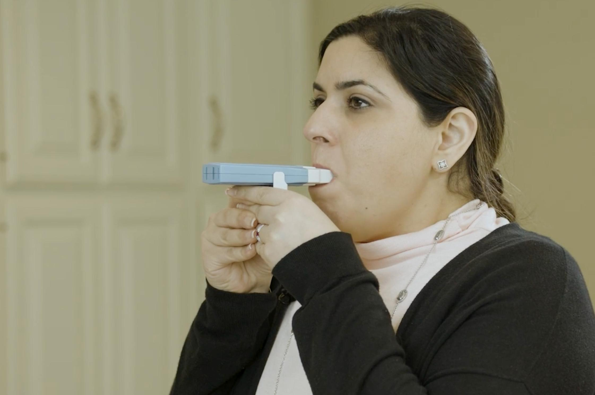
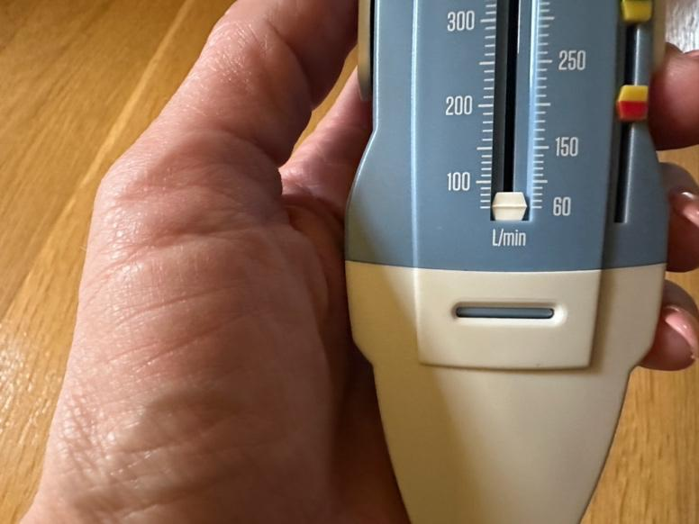
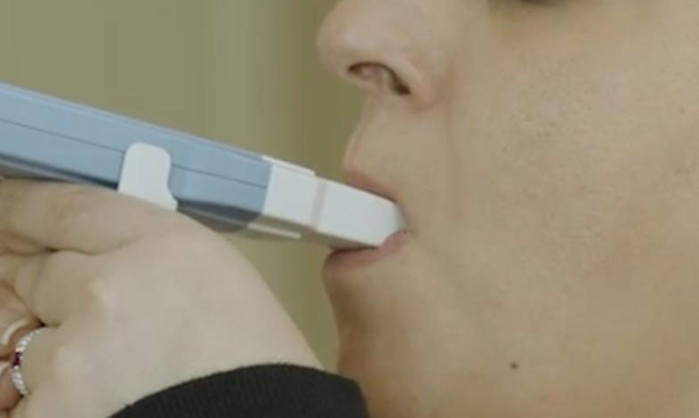
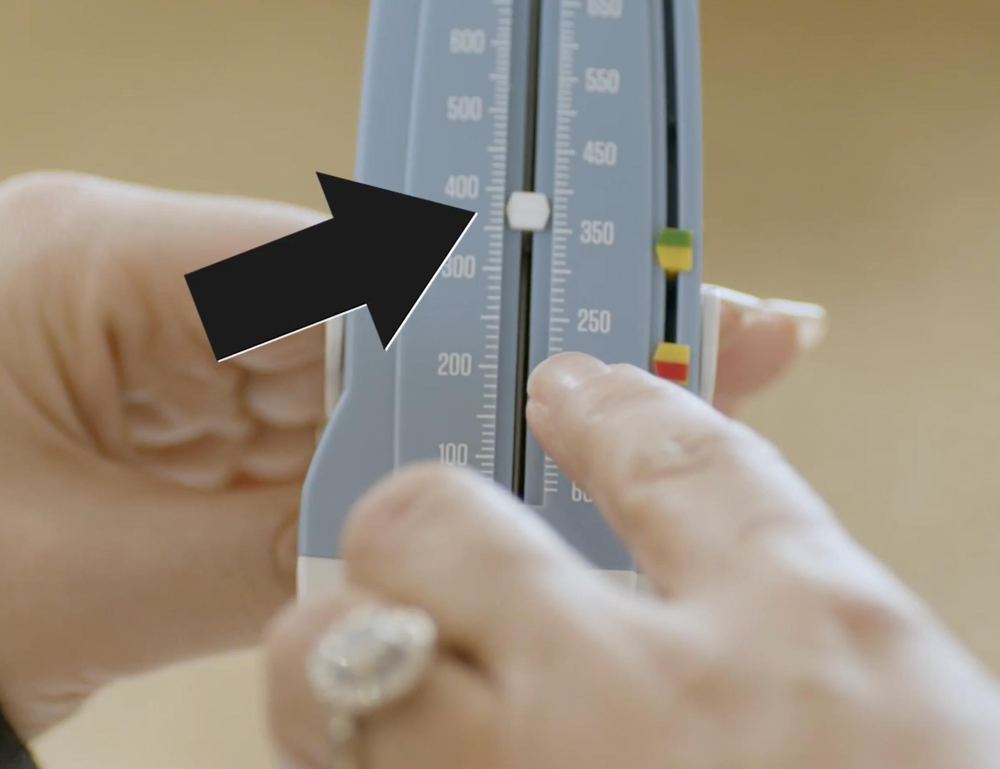
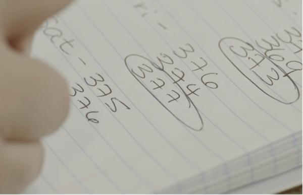

A peak flow meter is a small tool that checks how well you can blow air out of your lungs. It helps you and your care team see how well your lungs are working.
If you have asthma or another lung condition, your airways can tighten and make it harder to breathe. A peak flow meter shows how open your airways are.
Use this tool each day to:
Help you know when your asthma or lung condition is getting worse before you feel sick
Help your care team know if your medicine is working
Help you know when you are in your green, yellow, or red zone on your asthma action plan

Always use the same peak flow meter. Try to take a reading at the same time each day.
For the first 2 weeks, repeat the following process twice a day when you have no asthma symptoms. After that, do it once a day at the same time each day.
1. Stand or sit up straight. Do not slouch.

2. Set the meter to zero. Make sure the marker is at the bottom.
3. Take in a deep breath. Fill your lungs all the way.

4. Put the mouthpiece in your mouth. Close your lips tightly around it. Make sure your tongue does not cover the hole where you will breathe.
5. Blow out as hard and fast as you can, like you are blowing out candles. The first big burst of breath is what gives you the reading. Blowing for longer will not raise the number.

6. Look at the number where the marker stopped.
7. Write down the number.

8. Do it 2 more times, for a total of 3 times. Rest between tries. Circle the highest number
out of the 3. That is your peak flow for the day.
Check your peak flow each morning and evening for 2 weeks in a row. The best number out of all those tries is your personal best. You will compare future readings to this number to check the health of your lungs.
Check your peak flow daily or as your care team tells you. Morning is best. Try to make it part of a routine, such as right after you brush your teeth.
Each time you check your peak flow, blow 3 times.

Once you have your personal best peak flow, you will work with your care team to know your green, yellow, and red zones. You can place markers on your peak flow meter to show which zone you are in. You will also write the zones on your asthma action plan.
Green zone: Green means good. In this zone, you are breathing at 80 to 100 percent of your peak flow.
Yellow zone: Yellow is the warning zone. You are in this zone if you are breathing at 50 to 79 percent of your peak flow. If you have asthma, take your rescue medicine, such as albuterol, right away.
Red zone: This is the danger zone. Your breath is less than 50 percent of your peak flow. Take rescue medicine right away and get to a hospital if you do not get better fast.
Thank you for trusting us with your care. We are here to support you and want you to feel your best. Contact us with any questions.
IF YOU HAVE A MEDICAL EMERGENCY, CALL 911 OR GO TO THE EMERGENCY ROOM.
The information presented is intended for general information and educational purposes. It is not intended to replace the advice of your health care provider. Contact your health care provider if you believe you have a health problem.
Last updated May 2025
© 2025 Mytonomy, Inc. All rights reserved.